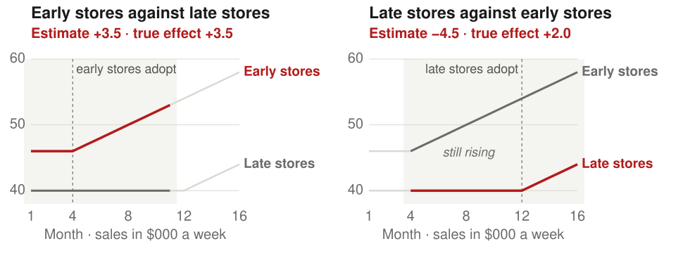

AEM 6991
MPS Capstone Project I
Prof. Ariel Ortiz-Bobea
9 · Research designs II
Wednesday, October 21, 2026
Outline
- Fixed effects. Compare each unit with itself over time, which removes every trait that does not change.
- Difference-in-differences and event studies. Add a comparison group, then follow the effect period by period, across adoption dates and doses.
- Few treated units. With one treated state the usual standard errors are too small, and a weighted mix of other states can serve as its control.
- Event studies in finance. A separate design with the same name, built on share prices around a dated announcement.
- Matching a design to a question. Seven published studies that use the designs of meetings 8 and 9, each posed in the setting its authors faced.
1. Fixed effects
Women on boards and firm value
- Do boards with more women raise firm value? Norway and others mandate quotas.
- Adams and Ferreira followed 1,939 firms in the Standard & Poor’s 1500 index, 1996–2003.
- Tobin’s q is market value over the book value of assets.
- With industry and size controls, one more woman on a ten-seat board went with 2.2% higher q.
- Within each firm over time, one more woman went with 1.3% lower q.
- Both are significant only at 10%. Firm culture may be a confounder, affecting both board makeup and value.
Fixed effects remove unchanging confounders
- A unit fixed effect is a separate intercept for each unit. It absorbs every fixed trait whose effect is also fixed.
- A period fixed effect absorbs shocks common to all units in a period.
- Two-way fixed effects (TWFE) include both. Units that never switch only help estimate the period effects.
Two-way fixed effects recover the app’s effect
- In this simulation 100 stores choose when to adopt the app. Larger stores adopt earlier and sell more.
- Every store’s sales also rise $250 a week each month. The app adds $4,000 a week.
- Across 500 samples pooled ordinary least squares (OLS), with no fixed effects, averages $11,300. Store fixed effects give $7,000. TWFE gives $4,000.
- 66 of the 100 stores adopt during the panel. The other 34 only help estimate the month effects.
Fixed effects miss confounders that change over time
- If local demand jumps $3,000 just before a store adopts, TWFE averages $6,000 against $4,000.
- Strict exogeneity assumes treatment in any period is unrelated to shocks in every period.
- Feedback, where past outcomes change later treatment, also breaks it.
- Solution: measure the changing confounder, or use treatment timing it cannot influence.
Fixed effects amplify measurement error
- If 10% of store-months record the app wrongly, TWFE keeps only 45% of its estimate.
- Pooled OLS keeps 80% of its own. Within a store true changes are rare, so errors are a larger share.
- Misreported union status creates false switchers. Within workers, the union wage premium fell by a third to a half.
- Solution: validate the treatment record, and check that each within-unit change is real.
Demeaning only the outcome biases the estimate
- Many finance papers subtract a group’s mean from the outcome, then run OLS.
- The treatment is left untransformed, so the estimator is inconsistent.
- Over 60 articles in three top finance journals, 2008–2010, used this or a related shortcut.
- For US listed firms, 1950–2010, the authors regressed leverage on profitability.
- Demeaning only leverage gave +0.051. Firm fixed effects gave −0.028.
- Solution: include the fixed effects, or demean outcome and treatment alike.
Who the fixed-effects estimate is about
- The estimate comes from units whose treatment changed.
- Adams and Ferreira’s units added or lost a woman, often one director.
- That says little about a quota that changes many seats at once.
- Report how many units switch and how much treatment varies within them.
2. Difference-in-differences and event studies
Difference-in-differences in four steps
- Two groups and two periods: the 2×2 comparison.
- Many periods: the event study, one comparison for each period.
- Adoption on different dates: staggered timing, where treated units can end up as controls.
- Different amounts of treatment: continuous doses.
Snow studied cholera and London’s water
- Cholera struck London in 1849 and again in 1854. Most doctors blamed foul air.
- John Snow, a London physician, argued that sewage in drinking water spread it.
- In 1849 two companies piped water to south London from the Thames in central London.
- In 1852 the Lambeth company moved its intake upstream, above the sewage. Southwark and Vauxhall did not.
- In many streets both companies’ pipes ran side by side, so neighbours drank different water.
On Snow’s map blue is Southwark and Vauxhall, red is Lambeth and purple is both.
Cholera deaths before and after Lambeth moved
| Cholera deaths per 10,000 residents | 1849 | 1854 | Change |
|---|---|---|---|
| 12 sub-districts supplied only by Southwark and Vauxhall | 134.9 | 146.6 | +11.7 |
| 16 sub-districts supplied by both companies | 130.1 | 84.9 | −45.2 |
| Difference-in-differences | −57 |
- The Southwark-only districts show what changed with no new water.
- Difference-in-differences (DiD) subtracts that change from the mixed districts’ change.
- Lambeth’s move cut deaths in the mixed districts by 57 per 10,000 residents.
- With a single earlier year, nobody can check that both groups were on the same path.
Two subtractions remove two kinds of confounder
- In month 7 a coffee chain launches a mobile-ordering app in its larger, busier region.
- Comparing each store with its own past removes every trait of the store that does not change.
- Subtracting the other region’s change removes shocks common to all stores, such as the season.
- Parallel trends assumes both regions’ sales would have changed by the same amount without the app.
Difference-in-differences recovers the app’s effect
- The app adds $4,000 a week in each of 40 stores. 40 stores elsewhere never get it.
- App-region stores sell $12,000 more to begin with. All sales rise $3,000 after month 6.
- Regions compared after launch differ by $16,000. The app region’s own change is $7,000.
- DiD averages $4,000 across 1,000 samples. Its standard error (SE), about $500, matches the standard deviation (SD) of the estimates.
Parallel trends is a claim about a counterfactual
- The dashed red line assumes parallel trends. The true counterfactual, sales without the app, is never observed.
- If app-region sales already grew $500 a month faster, DiD averages $7,000 against a true $4,000.
- The two groups’ pre-period paths are the main evidence on the assumption.
- Solution: plot both groups before the change, and choose controls whose earlier paths match.
Job trainees’ earnings fell before they enrolled
- In 1976, 3,072 men began a US federal job-training program.
- The controls were men from the Current Population Survey, a national household survey.
- Trainees’ earnings fell from $2,970 in 1973 to $1,898 in 1975, in 1967 dollars.
- People enrol after a bad year, the Ashenfelter dip. From that year, the usual recovery looks like an effect.
| “Before” year | DiD estimate, 1978 earnings |
|---|---|
| 1975, the year of the dip | +$785 |
| 1974 | +$8 |
| 1973 | −$473 |
| 1970 | −$1,110 |
- Solution: report several “before” years, and match on recent employment history.
A tax in one city moved sales across its border
- Philadelphia’s 2017 tax on sweetened drinks raised their prices 34%.
- City stores’ sales of taxed drinks fell 46%. Stores just outside sold more.
- Spillover means the treatment changes outcomes in the control group.
- The DiD compares city stores with stores over 6 miles out, where sales did not rise.
- Counting the border gains, purchases fell 22%.
- Solution: choose controls beyond the spillover, and estimate it separately.
An event study estimates the effect month by month
- App-region stores are compared with the others by month, with store and month fixed effects.
- Leads and lags mark each month before and after the launch.
- Month −1 is the reference period, set to zero. Leads near zero support parallel trends.
- If the effect grows as customers learn the app, the lags climb from $1,000 to $7,000.
- A single DiD coefficient reports their average, $4,000, and hides the path.
Choosing a DiD or an event study
| Difference-in-differences | Event study | |
|---|---|---|
| Reports | One average effect after treatment | One effect for each period, against a reference period |
| Needs | Two periods, or periods pooled before and after | Several periods before and after |
| Shows pre-trends | No | Yes, in the leads |
| Shows whether the effect builds or fades | No | Yes, in the lags |
- With two periods the two are the same comparison.
- With more periods report both: the event study as the figure and the DiD as the summary.
A pre-trend test can pass when parallel trends fails
- Suppose app-region sales already rose $500 a month faster, app or no app.
- A pre-trend test that all leads are zero rejects in only 41% of samples.
- Samples that pass estimate $6,300. Roth shows the same risk in 12 published studies.
- Solution: report how large a violation of parallel trends would overturn the result.
Roth (2022), Pretest with Caution, American Economic Review: Insights 4, 305–322.
Staggered adoption changes who serves as control
- In staggered adoption units adopt on different dates, here months 4 and 12.
- TWFE compares every pair of groups over every pair of periods.
- After month 12 it uses early stores, which have the app, as controls for late stores.

Already-treated controls can flip the sign
- The app’s effect grows by $1,000 a week each month after adoption.
- Early stores against late stores before month 12 is a clean comparison.
- Late stores against early stores subtracts the early stores’ growing effect.

Growing effects bias staggered TWFE estimates
- Now three groups of 30 stores adopt in months 4, 8 and 12.
- TWFE also uses stores that already have the app as controls, with 60% of its weight.
- If effects grow with time, TWFE averages −$1,100, though no store’s true effect is negative.
- Solution: use Callaway–Sant’Anna, which compares only with not-yet- or never-treated units.
Staggered designs are common in finance research
- In 2000–2019, 407 of 744 DiD papers in top finance and accounting journals were staggered.
- Baker, Larcker and Wang re-estimated two published results with newer estimators.
- A 2017 study found board reforms in 41 countries raised Tobin’s q by 0.11. Newer estimators give an insignificant 0.06.
- Solution: plot adoption dates, decompose the TWFE estimate, and use a staggered-timing estimator.
Treatment that comes in doses
- In April 1990 the federal minimum wage rose from $3.35 to $3.80 an hour.
- The dose was the share of a state’s teens paid $3.35–$3.79 in 1989: 0 in Alaska, 54% in West Virginia.
- Teen wages rose more where the dose was larger. Teen employment did not change significantly.
- Comparing doses needs strong parallel trends: no state got its dose because of what it would gain.
- Solution: compare each dose with untreated units, and defend strong parallel trends before reading a slope.
Card (1992), Using Regional Variation in Wages to Measure the Effects of the Federal Minimum Wage, Industrial and Labor Relations Review 46, 22–37. · Callaway, Goodman-Bacon and Sant’Anna (forthcoming), Difference-in-Differences with a Continuous Treatment, American Economic Review.
Who the DiD estimate is about
- DiD estimates the average treatment effect on the treated (ATT): the effect on treated units in the periods observed.
- Snow’s estimate concerns 16 London sub-districts in 1854.
- In an event study each lag is the ATT that many periods after treatment.
- With staggered adoption distant lags come only from the earliest adopters.
- Report the 2×2 means, the pre-period paths, every lead and lag, and the estimator.
3. Few treated units
Few treated units break clustered standard errors
- Clustered standard errors let a state’s errors correlate over time. They need many treated states.
- From 1993 Georgia’s HOPE scholarship paid tuition. The controls are 41 states without merit aid.
- It raised college enrollment by an estimated 7.8 percentage points.
- Clustered by state, the 95% confidence interval is 5.8 to 9.7.
- The Conley–Taber interval, built from the control states’ shocks, is −1 to 21.
- In simulations with one treated state, clustered 5% tests rejected a true zero effect 84% of the time.
- Solution: run a permutation test, treating each control as if treated, or use Conley–Taber.
California’s tobacco program had no matching state
- In 1988 California voters raised the cigarette tax 25 cents a pack and funded anti-smoking campaigns.
- California’s sales began falling in the late 1970s, while other states’ still rose.
- Synthetic control weights untreated units to track the treated unit’s past.
- Synthetic California is 33% Utah, 23% Nevada, 20% Montana, 16% Colorado and 7% Connecticut.
- By 2000 California sold about 26 fewer packs per person than synthetic California.
Synthetic control weights a donor pool
- The chain launches its app in one city. 20 cities without it form the donor pool.
- Before launch the root mean squared prediction error (RMSPE) is $6,100 for the donor average and $540 for the synthetic control.
- After launch the synthetic control’s gap averages $3,900, against a true $4,000.
- A placebo in space treats each donor as launched. The launch city ranks 1 of 21 on post/pre RMSPE.
4. Event studies in finance
Earnings news moved stock prices within a day
- Does earnings news change a firm’s stock price, and how fast?
- MacKinlay studied 600 announcements by the 30 Dow Jones firms, 1989–1993.
- Earnings beat analysts’ forecasts 189 times, missed them 238 times and were close 173 times.
- On the day, returns beyond the market’s move were +0.97% for good news and −0.68% for bad.
- Prices move daily for many reasons, so a raw return mixes the news with everything else.
- Solution: subtract the return the market alone would predict.
MacKinlay (1997), Event Studies in Economics and Finance, Journal of Economic Literature 35, 13–39.
Abnormal returns isolate the reaction to news
- The market model R_{it} = \alpha_i + \beta_i R_{mt} + \varepsilon_{it} links firm i’s return on day t to the market’s.
- The abnormal return is the return minus \hat\alpha_i + \hat\beta_i R_{mt}, fit by OLS in an estimation window.
- One announcement’s cumulative abnormal return (CAR) over the event window is +2.5%, SE 2.4.
- The true effect is +3.5% over days −1 to +1. Averaged over 100 announcements, the CAR is +3.6%.
Other news in the window enters the estimate
- The design assumes nothing else moved the stock in the event window.
- If firms also release earnings that day, the average CAR is +5.7%, against a true +3.5%.
- US firms leaving apartheid South Africa had a CAR of −2.4%. Without firms with other news it was −1.0%.
- Solution: keep the window short, search the news, and drop events with other news.
Two designs are called event studies
| Finance event study | Panel event study | |
|---|---|---|
| Data | Each firm’s daily returns around its event | Treated and untreated units over several periods |
| Counterfactual | The market model, fit before the event | The untreated units’ change |
| Assumption | Nothing else moved the stock in the window | Parallel trends; no anticipation |
| Estimates | Abnormal returns by day | The effect in each period since treatment |
- The finance version needs no untreated firms. The market return stands in for calendar time.
- The Effect covers the finance design in ch. 17 and the panel design in ch. 18.
Who the finance event-study estimate is about
- The estimate is how investors revalued the announcing firms.
- It captures only the news that investors did not already expect.
- Report the estimation and event windows and the news search.
What each design assumes
| Design | Variation used | Assumption | Tests that could reject it | The estimate is for | |
|---|---|---|---|---|---|
| 1 | Fixed effects | Changes within each unit over time | Strict exogeneity: no confounder that changes over time, no feedback | Leads of the treatment; past outcomes predicting treatment | Units whose treatment changed |
| 2 | Difference-in-differences | The treated units’ change against the untreated units’ change | Parallel trends; no anticipation; no spillover onto the controls | Pre-period paths; placebo dates and groups | The treated units (ATT) |
| 2 | Event study | The same comparison, period by period | Parallel trends in every period | Leads near zero | The ATT by period since treatment |
| 2 | Staggered adoption | Each adoption group against units not yet or never treated | Parallel trends for every adoption group | Leads by adoption group; the Goodman-Bacon weights | Each adoption group, period by period |
| 2 | Continuous doses | Units with more of the treatment against units with less or none | Parallel trends for each dose; strong parallel trends to compare doses | Pre-period paths by dose | Units at each dose |
| 3 | Synthetic control | One treated unit against a weighted mix of untreated units | The mix that tracked the past would track the future | Pre-period fit; placebo in space | The one treated unit |
| 4 | Finance event study | Returns around a dated announcement | No other news in the window | Pre-event returns; a news search | The announcing firms |
Six designs
| Design | Variation used | Assumption carrying the estimate | The estimate is for | |
|---|---|---|---|---|
| 1 | Randomized experiment | A coin | The coin alone decides who is treated | The population randomized |
| 2 | Instrumental variables | The part of treatment an instrument, a variable that shifts it, moves | Exclusion: the instrument reaches the outcome only through the treatment | Compliers, the units the instrument moves into treatment |
| 3 | Regression discontinuity | Units just above and just below a cutoff | Continuity: without treatment, outcomes change smoothly at the cutoff | Units at the cutoff |
| 4 | Difference-in-differences and fixed effects | The treated units’ change against the untreated units’ change, over two or many periods | Parallel trends | The treated units |
| 5 | Synthetic control | One treated unit against a weighted mix of untreated units | The mix that tracked the past would track the future | The one treated unit |
| 6 | Finance event study | Returns around a dated announcement | No other news in the window | The announcing firms |
- Your proposal names one row and defends its assumption against a sceptic.
Designs this course does not cover
| Design | What it does | Where to read |
|---|---|---|
| Triple differences | Subtracts a second DiD, for a group in the same places that the policy does not target | Remix 10.2 |
| DiD with covariates | Assumes parallel trends only among units with similar covariates, and reweights | Remix 10.3–10.6 |
| Synthetic difference-in-differences | Combines synthetic-control weights with two-way fixed effects | Remix 11.5 |
| Partial identification | Reports the range of effects the data allow under weaker assumptions | The Effect ch. 21 |
| Bunching | Measures the excess number of people at a kink or notch in a tax or price schedule | Kleven (2016) |
| Shift-share instruments | Combines regions’ industry shares with national industry shocks | Remix 7.7 |
| Regression kink | Uses a change in the slope of a benefit formula at a threshold | The Effect 20.3.1 |
| Double machine learning, causal forests | Use machine learning for the controls, or for how effects vary | The Effect 22.2.4, 22.3.1 |
| Structural estimation | Fits an economic model and simulates policies never observed | The Effect 22.4 |
| Dynamic panels | Instruments a lagged outcome when it sits alongside fixed effects | Mostly Harmless 5.3 |
5. Matching a design to a question
Does working from home make staff more productive?
- In 2010 Ctrip, a Chinese travel agency, considered home working for its Shanghai call center.
- Staff who choose home differ from those who stay, in commutes, children and motivation.
- Ctrip logs every call. 503 of about 1,000 staff in two departments volunteered.
- Which design could identify the effect, and what would it assume?
- What the authors did: eligible volunteers born on even-numbered days worked from home four days a week for nine months.
- Calls rose 13%, mostly from more minutes per shift. Quits fell from 35% to 17%.
Does handing a firm to a family heir hurt it?
- When a Danish firm’s chief executive officer (CEO) steps down, the successor may be a relative or an outsider.
- Families may keep the job in the family when they expect the firm to do well.
- Registers link each departing CEO to their children, with each child’s sex and birth order.
- Which design could identify the effect, and what would it assume?
- What the authors did: used a firstborn son as an instrument for a family successor, in 4,692 successions.
- A firstborn son raised family succession from 29% to 39%. A family CEO cut operating return on assets by about 9 points, against 1.4 by OLS.
Does better governance raise firm value?
- Shareholders vote on governance proposals, such as removing a poison pill, a defence against takeovers.
- Firms where such proposals pass differ from firms where they fail.
- Riskmetrics records 3,984 proposals at large US firms, 1997–2007, with each vote share.
- Which design could identify the effect, and what would it assume?
- What the authors did: compared vote-day abnormal returns for proposals just above and just below the threshold, usually 50%.
- Passing raised the share price 1.3% that day. Scaled by how often firms adopt passed proposals, adoption is worth about 2.8%.
Does posting calories change what customers buy?
- In 2008 New York City required chains to post calories on menu boards. Starbucks began on 1 April.
- Starbucks shared every transaction at its New York, Boston and Philadelphia stores for 2008–09.
- Boston and Philadelphia had no such law.
- Which design could identify the effect, and what would it assume?
- What the authors did: compared New York stores with Boston and Philadelphia stores, before and after 1 April 2008.
- Calories per transaction fell 6%, almost all from food. Revenue held, and rose 3.3% near a Dunkin’ Donuts, which also posted calories.
Did bank deregulation reduce income inequality?
- Many US states once limited how many branches a bank could open.
- From the 1970s to 1999 every state lifted the limits, each in its own year.
- The Current Population Survey gives each state’s income inequality, 1976–2006.
- Which design could identify the effect, and what would it assume?
- What the authors did: regressed state inequality on the staggered dates with state and year fixed effects. The Gini coefficient, from 0 to 1, fell about 2%.
- A 2022 re-analysis used only not-yet-deregulated states as controls and found no effect.
Beck, Levine and Levkov (2010), Big Bad Banks? The Winners and Losers from Bank Deregulation in the United States, Journal of Finance 65, 1637–1667. · Baker, Larcker and Wang (2022), Journal of Financial Economics 144, 370–395.
What did terrorism cost the Basque Country?
- ETA, a Basque separatist group, began killing in 1968. Its attacks peaked in 1978–1980.
- The Basque Country fell from third-richest of Spain’s 17 regions in the early 1970s to sixth by the late 1990s.
- The other 16 regions have economic data from the 1960s on.
- Which design could identify the effect, and what would it assume?
- What the authors did: built a synthetic Basque Country from 85% Catalonia and 15% Madrid.
- Basque gross domestic product (GDP) per person ran about 10% below the synthetic region’s in the 1980s and 1990s.
What is an independent director worth?
- Independent directors have no job at the firm. Boards add them after poor results, which confounds comparisons.
- News and filings record 772 deaths of directors of US listed firms, 1994–2007.
- Some died suddenly, of heart attacks, strokes or accidents.
- Which design could identify the effect, and what would it assume?
- What the authors did: measured abnormal returns over days −1 to +2 around 108 sudden deaths of independent directors.
- Share prices fell 0.85% on average, almost $35 million for the average firm, and more for audit committee members.
Which design is open to your project?
- Could you decide at random who gets the treatment?
- Does something unrelated to the outcome push some units into treatment?
- Does a score with a cutoff decide who is treated?
- Did a change reach some units and not others, on a date you can name?
- Did units start on different dates, or is only one unit treated?
- Is your event a dated announcement by a firm whose shares trade?
- If none applies, what do you defend in place of an identifying assumption?
AEM 6991